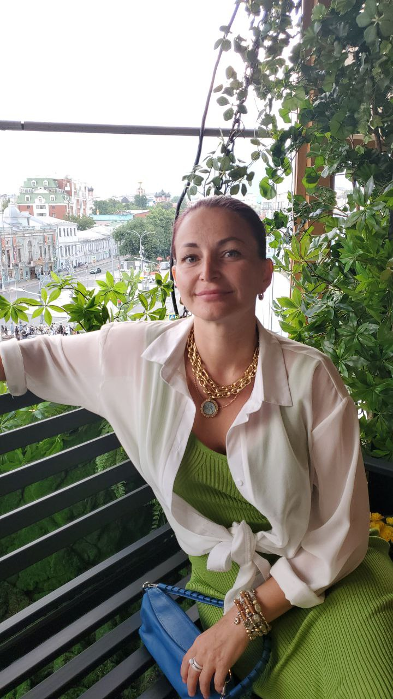
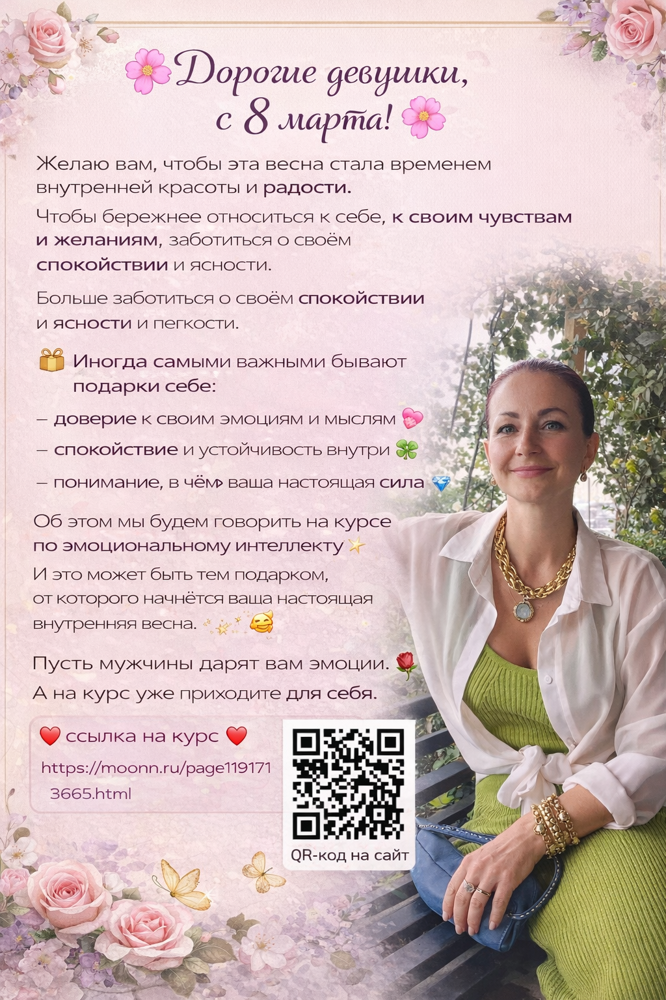
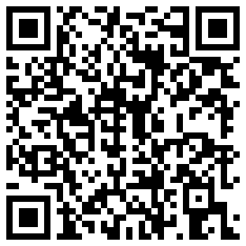

Evidence-first
Публикации, аналитика движения, мероприятия и образовательные маршруты опираются на подтверждённые материалы, а не на рекламные формулировки.
МИИИИПС объединяет исследования, публичные лекции, прикладные кейсы по спорту и образовательные программы в едином пространстве института.

Здесь собраны ценности, цифры, направления и документы, чтобы человек сразу понимал, чем занимается МИИИИПС, кто ведёт ключевые публичные форматы и где начинается контакт.
Публикации, аналитика движения, мероприятия и образовательные маршруты опираются на подтверждённые материалы, а не на рекламные формулировки.
На сайте видны не только темы, но и люди: Татьяна Мунн, публичные лекции, докладчики, оппоненты, кейсы и маршруты входа.
Каждый трек отвечает на вопрос, где он применим: спорт, ЛФК, фитнес, образование, отделы продаж, переговорные команды, студенты и подростки.
консультаций и прикладных разборов за 2025 год
консультаций и учебных маршрутов за 2024 год
направлений и рабочих треков в текущей сборке института
формата входа: лекции, семинары, корпоративные модули, аналитика, сопровождение, заявки


В блок встроены реальные материалы: лекции в МГУ, открытые городские форматы, курс по эмоциональному интеллекту, а также короткое видео с живым выступлением.

OCR эргометра, overlay HUD, pace / SPM / watts и перенос логики на фитнес, ЛФК и командные виды спорта.
Фитнес-центры, восстановление, спортивные школы, футбол с внешними камерами и дронным ракурсом.
Трек по гребле теперь показан не только текстом: добавили экран проекта и развели прикладные маршруты по сегментам, чтобы было видно, как текущая логика масштабируется на фитнес, ЛФК, спортивные школы и футбол.
Курс, лекции, публичные выступления, библиотечные и университетские маршруты, корпоративные форматы для команд и переговорных ролей.
Сайт показывает не только список направлений, но и понятный путь публикации: проверка журнала, статус статьи, требования и антиплагиат.
Видеоаналитика движения, спортивные кейсы, перенос на футбол и дальнейшая работа с внешними камерами и прикладными сценариями для клубов и центров.
Мы убрали developer-tone и оставили только то, что понятно внешнему человеку: корректность описаний, прозрачность обещаний, уважение к данным клиентов и честные формулировки без ложных медицинских или научных обещаний.
Если нужен совместный проект в области ИИ, психологии, спорта или прикладной аналитики, используйте форму партнёрства. На сайте уже есть отдельный рабочий маршрут для этого запроса.

QR-код даёт быстрый вход в курс и материалы института. Это удобно для открытых лекций, семинаров и городских площадок.
Сайт уже показывает три честных типа входа: лекции и мероприятия, прикладные спортивные кейсы, публикационное и исследовательское сопровождение.